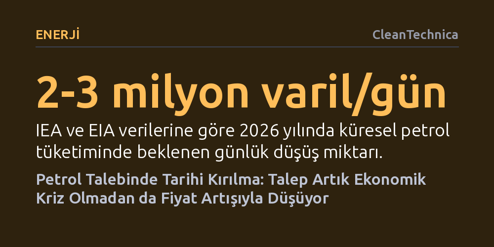

ENERJI · CleanTechnica · 2026-10-25
Tarihte ilk kez petrol talebi genel bir ekonomik kriz olmaksızın, doğrudan fiyat artışlarına tepki vererek esnekleşti ve düşüşe geçti. 2026 verileri, yüksek akaryakıt fiyatlarının küresel resesyon beklemeden talep yıkımını tetiklediğini ve petrole bağımlılığın yapısal olarak kırıldığını gösteriyor.
Petrol talebinin fiyata duyarsız ve vazgeçilmez olduğu kabulünü yıkarak, yüksek fiyatların artık ekonomik kriz yaratmadan doğrudan petrol tüketimini kalıcı biçimde azalttığını kanıtlıyor.

Petrol piyasasının yüz yılı aşkın tarihinde değişmez kabul edilen temel bir kural vardı: Küresel petrol tüketiminin gerilemesi için mutlaka büyük bir küresel kriz, derin bir resesyon ya da yıkıcı bir salgın yaşanması gerekirdi. Nitekim 1974-1975 ve 1980-1983 petrol krizlerinde, 2008 küresel finans krizinde ve 2020 pandemisinde tüketim ancak dünya genelindeki ekonomik faaliyetler felce uğradığında azalmıştı. Ancak 2026 yılında bu döngü ilk kez kırıldı; ortada küresel bir ekonomik kriz bulunmamasına rağmen dünya genelinde petrol tüketimi hızla geriliyor.
Piyasayı izleyen üç ana kurumdan ikisi olan Uluslararası Enerji Ajansı (IEA) ve ABD Enerji Enformasyon İdaresi (EIA), 2026 yılında küresel petrol tüketiminin günlük 2 ila 3 milyon varil arasında azalacağını öngörüyor. OPEC her zamanki iyimserliğiyle hafif bir artış tahmin etse de bağımsız veriler, salgın yıllarından bu yana ilk kez böylesi bir talep daralması yaşandığını netleştiriyor. Bir resesyon kapıda olsa bile, tüketim düşüşünün krizden önce gerçekleşmesi petrol piyasasında köklü bir kırılmaya işaret ediyor.
İktisat biliminde fiyat dalgalanmalarının tüketime etkisini tanımlamak için esneklik kavramına başvurulur. Temel gıda maddeleri gibi zorunlu ihtiyaçlar gelir veya fiyat ne olursa olsun benzer miktarda tüketildiğinden talep esnekliği düşüktür; buna karşılık uçak bileti gibi kalemlerde fiyatlar arttığında tüketim hızla geriler. Petrol, insanların her koşulda işe gitmek, ısınmak ve mal taşımak zorunda olması nedeniyle on yıllar boyunca fiyata duyarsız, yani katı bir meta olarak kabul edildi. Fiyatlar ucuzken talep biraz daha hızlı, pahalıyken biraz daha yavaş artıyordu; fakat gerilemesi için mutlaka ekonominin durması gerekiyordu.
Son yirmi yılın verileri bu kabule dayanıyordu. Enflasyondan arındırılmış pompa yakıtı fiyatlarının galon başına 4 doları aştığı 2005-2008, 2009-2014 ve 2021-2023 dönemlerinde küresel tüketim düşmek bir yana artmayı sürdürdü. Analistler talep yıkımının başlaması için fiyatların katbekat yükselmesi gerektiğini düşünüyordu. Ancak 2026'nın Mart ayından bu yana tüketim yaklaşık yüzde 2,4 oranında (günlük 2,5 milyon varil) azaldı. Geçmişte tüketimi artıran fiyat seviyesi bugün talebi düşürmeye yetiyor; çünkü alternatif teknolojilerin yaygınlaşmasıyla birlikte petrol talebi tarihte ilk kez fiyata doğrudan tepki veren esnek bir yapı kazandı.
Donald Trump yönetiminin İran'a karşı başlattığı ve sekizinci ayına giren askeri harekât, yalnızca Hürmüz Boğazı'nda değil; Babülmendep, Doğu-Batı boru hattı ve küresel rafineri kapasitesi gibi kritik noktalarda tedarik zincirini sarstı. Ne var ki bu savaşın asıl sarsıcı sonucu lojistik aksaklıklar değil, petrol piyasasında halihazırda olgunlaşan yapısal değişimi su yüzüne çıkarması oldu. Kişi başına düşen petrol tüketimi gerilerken, ekonomik üretim başına gereken petrol yoğunluğu da kalıcı biçimde sıfıra doğru yaklaşıyor.
OPEC geleneksel olarak varil başına 90-100 dolar bandını ideal fiyat kabul eder, asıl talep yıkımının ancak 120 dolar aşıldığında tetikleneceğini varsayardı. Yeni piyasa gerçeği ise bu yıkım eşiğinin hızla aşağı indiğini; artık 90, hatta 80 ve 70 dolarlık seviyelerde bile tüketicilerin petrolden kaçtığını gösteriyor. Petrol üreticilerinin desteğiyle iktidara gelen siyasi tercihlerin tetiklediği bu kriz, ironik biçimde fosil yakıt sonrası bir dünyaya geçişi görülmemiş bir hızla öne çekiyor.